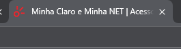

As tags semânticas são tags que possuem significado, ou seja, elas têm um significado para o navegador e para os mecanismos de busca. Elas são importantes para a acessibilidade e para o SEO (Search Engine Optimization).
Tags Semânticas e Não Semânticas
As tags com efeito semântico, como <header> e <article>, fornecem significado ao conteúdo, ajudando navegadores e mecanismos de busca a entenderem a estrutura e a importância das informações. Já as tags sem efeito semântico, como <div> e <span>, são usadas apenas para estilização e agrupamento de elementos, sem transmitir nenhum significado específico sobre o conteúdo.
As tags semânticas são:
<header>: Cabeçalho
<nav>: Navegação
<main>: Conteúdo principal
<article>: Artigo
<section>: Seção
<aside>: Lateral
<footer>: Rodapé
As tags não semânticas são:
<div>: Divisão
<span>: Span
<p>: Parágrafo
<a>: Link
<button>: Botão
<ul>: Lista não ordenada
<ol>: Lista ordenada
Elementos do Head
O head é a seção do HTML onde colocamos todas as configurações iniciais do documento. Aqui, declaramos informações importantes para os motores de busca e outras configurações essenciais que ajudam a definir como a página será exibida e interpretada.
Por exemplo, dentro do head, você pode definir o título da página, que é exibido na aba do navegador, e incluir metatags que fornecem informações sobre o conteúdo da página. Essas metatags são cruciais para o SEO, pois ajudam os motores de busca a entenderem melhor o conteúdo e a relevância da sua página.
Vamos ver um exemplo simples de como o head pode ser estruturado:
<head>
<meta charset="UTF-8">
<meta name="viewport" content="width=device-width, initial-scale=1.0">
<title>Título da Página</title>
<meta name="description" content="Descrição da página para SEO">
<meta name="keywords" content="palavras-chave, separadas, por, vírgulas">
</head>
Como você pode ver, o head é essencial para configurar corretamente a sua página e garantir que ela seja bem interpretada tanto pelos navegadores quanto pelos motores de busca.
<title>xxx</title>
A tag <title> define o título que será exibido na aba do navegador. Veja o exemplo abaixo:

Além disso, o título é um dos elementos mais importantes para os mecanismos de busca (SEO). Ele ajuda a determinar a relevância da página nos resultados de pesquisa. Veja como o título aparece (em azul) nos resultados de busca:
Portanto, é essencial que o título seja descritivo e contenha palavras-chave relevantes para melhorar o ranqueamento da página.
Metatags
As metatags são usadas para configurar o próprio documento HTML. Elas fornecem informações importantes para os motores de busca e ajudam a definir como o conteúdo deve ser exibido.
Charset
A metatag charset define o padrão de caracteres usado na página. No Brasil, devemos usar sempre o UTF-8, pois ele suporta acentuações, til, cedilha, etc.
Quando usamos o charset errado, o navegador não interpreta esses caracteres corretamente, resultando em erros no texto.
O código:
<meta charset="UTF-8">
Viewport
A metatag viewport ajusta a largura do navegador para adaptar o conteúdo do site, tornando-o mais responsivo.
A metatag description é crucial para o SEO, pois define a descrição que aparece nos resultados de busca, logo abaixo do título do site. Veja o exemplo abaixo:
É importante criar uma descrição atraente e relevante para aumentar a chance de cliques no seu site. Veja como usar essa metatag:
<meta name="description" content="Tudo que você precisa conhecer sobre tags semânticas do HTML5">
Keywords
A metatag keywords define as palavras-chave que ajudarão a página a ser exibida nos resultados de busca.
Essa metatag, junto com a description, é uma técnica diretamente ligada ao SEO e super importante para um bom ranqueamento do site.
A metatag author define o autor do documento. Embora não tenha um impacto direto no SEO, é uma boa prática incluí-la para fornecer informações adicionais sobre o autor do conteúdo.
<meta name="author" content="Seu Nome">
Robots
A metatag robots é usada para controlar o comportamento dos mecanismos de busca em relação à indexação e ao seguimento de links na página. Ela pode ser usada para permitir ou impedir a indexação da página e o seguimento de links.
<meta name="robots" content="index, follow">
Elementos do Body
O body é a parte do HTML onde colocamos todo o conteúdo visível da página. É aqui que declaramos os elementos que serão exibidos no navegador, como textos, imagens, links, vídeos e muito mais. Pense no body como o palco onde toda a ação acontece.
Por exemplo, se você quiser adicionar um parágrafo ou uma imagem, ou um link. Cada um desses elementos é colocado dentro do body para que possam ser exibidos ao usuário.
Vamos ver um exemplo simples:
<body>
<p>Este é um parágrafo de exemplo.</p>
<img src="imagem.jpg" alt="Descrição da imagem">
<a href="https://www.exemplo.com">Visite nosso site</a>
</body>
Como você pode ver, o body é essencial para estruturar e organizar o conteúdo que será apresentado ao usuário. É importante lembrar que tudo o que você deseja que apareça na página deve estar dentro do body.
Header
Cabeçalho: A porta de entrada do site, a primeira coisa que o cliente vê ao carregar a página. Deve ser sempre bem feito.
Embora o <header> seja geralmente usado no topo da página, você pode utilizá-lo em outras partes do documento, como dentro de um <article>, <main> ou <section>, conforme a necessidade. Por exemplo, em um blog, cada post pode ter seu próprio <header> com o título e a data de publicação. Isso ajuda a organizar o conteúdo e a torná-lo mais acessível e compreensível tanto para os usuários quanto para os mecanismos de busca.
Main
A tag <main> é usada para envolver o conteúdo principal do site, ou seja, o foco principal da página. Ela ajuda os mecanismos de busca e tecnologias assistivas a entenderem qual é a parte mais importante do conteúdo. Por exemplo, em um site de notícias, a tag <main> pode envolver os artigos e reportagens, enquanto em um blog, ela pode envolver as postagens.
Footer
O rodapé é uma das principais tags semânticas de uma página. Ele define a área do rodapé, onde geralmente colocamos informações adicionais que não estão diretamente relacionadas ao conteúdo principal, como links para políticas de privacidade, informações de contato, ou direitos autorais.
Títulos
Os títulos são elementos de texto que indicam a importância de uma seção ou de um conteúdo específico. Eles são usados para estruturar o conteúdo da página e facilitar a leitura e a compreensão do usuário.
Os títulos são divididos em seis níveis de importância, de <h1> a <h6>. O <h1> é o mais importante e o <h6> é o menos importante. Eles são usados para organizar o conteúdo da página em seções e subseções, facilitando a navegação e a compreensão do usuário. Eles também são importantes para o SEO, pois os mecanismos de busca usam os títulos para determinar a importância daquele assunto na página.
Quando um usuário pesquisa por uma palavra-chave e seu título <h1> contém ou é exatamente essa palavra-chave, o mecanismo de busca tende a ranquear melhor sua página nos resultados. Isso ocorre porque o <h1> é considerado o título mais importante da página.
No entanto, não é recomendável usar <h1> em todos ou em muitos títulos na página. Os mecanismos de busca valorizam o <h1> porque ele deve representar o tema principal da página. Se você usar mais de um <h1>, a importância do título principal é diluída, prejudicando muito o ranqueamento. Então use apenas um <h1> por página!
Nav
A tag <nav> é usada para definir um bloco de links de navegação. Ela ajuda os mecanismos de busca e os leitores a entenderem que os links dentro desse bloco são parte da navegação do site. Por exemplo, você pode usar a tag <nav> para agrupar links para as principais seções do seu site, como "Início", "Sobre", "Serviços" e "Contato". Isso torna a navegação mais clara e acessível para todos.
Article
Consulte o site MDN web docs para mais informações sobre essa e todas as outras tags semânticas.
Um dos elementos que mais geram confusão no uso. Essa tag foi criada no HTML5
Porém, as mais confusas são article e section. Tentando explicar article de forma simplificada: essa tag deve ser usada sempre que for um assunto independente. Essa é a palavra-chave para definir article: assunto independente.
Se você escreve um trecho do seu site e consegue retirá-lo dali e o site continua fazendo sentido, provavelmente está falando de um article.
Outra forma de identificá-lo é que o article geralmente vem com um título de alto valor dentro da página, como um <h1>, <h2> ou <h3>.
Section
Outro elemento que gera muita confusão na hora de criar um site.
Por mais que em teoria ele seja o oposto ao article, ele se confunde muito com o próprio article. A section deve ser sempre aquele trecho que pertence a algum outro trecho no site. Ela também vem acompanhada de títulos, porém de menor relevância, como um <h3> em diante.
A section como o próprio nome diz é uma seção uma parte semantica de um texto.
A section nunca deve ser usada no lugar de div, pois div não é semântica.
Diferenciando Article de Section
Imagine uma redação com título, introdução, desenvolvimento com três argumentos e conclusão. A introdução, o desenvolvimento e a conclusão são as três <section> da redação, enquanto o <article> seria a redação inteira, incluindo o título.
Agora, imagine um texto extenso. Esse texto também teria essas três <section>. Entretanto, os argumentos poderiam ser considerados <article> dentro do <article> principal, que seria o próprio texto, além de estarem na <section> de desenvolvimento.
Aside
É um assunto paralelo.
A tag <aside> é usada para definir um conteúdo que está relacionado ao conteúdo principal, mas que não é parte dele. Esse conteúdo é geralmente exibido em uma barra lateral ou em uma seção separada do conteúdo principal. Exemplos comuns de uso da tag <aside> incluem barras laterais com links para artigos relacionados, anúncios, biografias de autores, ou qualquer outro conteúdo que complemente o principal.
Outros exemplos estão os pdf de Professor Gustavo Guanabara sempre que aparece o personagem abaixo é um aside.
Tags de Menor Valor
<p>: Parágrafo
<button>: Essa tag diz que aquele link é um botão e é ótima para usar o CSS
<a>: Cria Hyperlinks para sites externos ou conteúdos internos
<ul>: Cria uma lista não ordenada
<ol>: Cria uma lista ordenada
As tags semânticas são essenciais para a estruturação e organização do conteúdo de uma página web. Elas fornecem significado ao conteúdo, facilitando a compreensão e a navegação do usuário, além de melhorar a acessibilidade e o SEO. Ao utilizar as tags semânticas corretamente, você estará criando páginas mais bem organizadas e otimizadas para os mecanismos de busca, o que contribuirá para um melhor posicionamento nos resultados de pesquisa.
É importante lembrar que as tags HTML não se limitam apenas às mencionadas aqui. Conhecer e utilizar essas tags corretamente fará uma grande diferença na estrutura e na acessibilidade do seu site.